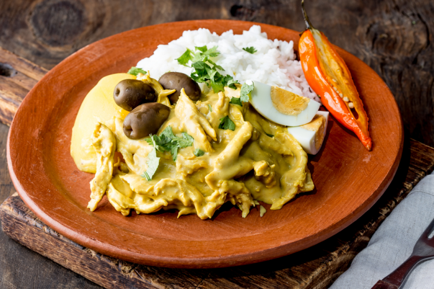
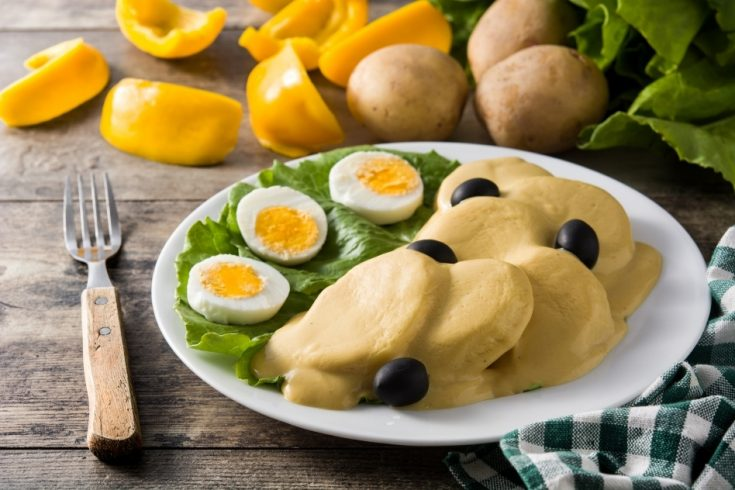

PERUVIAN CUISINE
 Ceviche
Ceviche
Peruvian ceviche is a variation of the traditional ceviche dish that is popular in Peru. It is typically made with raw fish, such as sea bass or halibut, that is marinated in lime juice and seasoned with aji peppers, garlic, salt, and cilantro.
 Lomo Saltado
Lomo Saltado
Lomo Saltado is a popular Peruvian dish that combines Chinese and Peruvian flavors. It is a stir-fry dish made with marinated strips of beef, onions, tomatoes, and french fries, and typically served with rice. One of the unique features of Lomo Saltado is the addition of french fries, which are added to the stir-fry just before serving. The fries are cooked until they are crispy, and then mixed with the beef and vegetables.

Aji de gallina
Aji de gallina is a popular Peruvian dish that is made with shredded chicken in a creamy and spicy sauce made from aji amarillo peppers, bread, milk, cheese, and nuts. Aji de gallina is typically served with boiled potatoes, white rice, and sliced boiled eggs. Aji de gallina is a popular dish in Peru, and is often enjoyed for lunch or dinner.

Papas a la Huancaina
Papas a la Huancaina is a popular Peruvian dish that features boiled potatoes covered with a spicy and creamy sauce made from aji amarillo peppers, cheese, milk, and crackers.The dish is typically garnished with hard-boiled eggs and black olives. Papas a la Huancaina is a popular appetizer or side dish in Peru, rich and flavorful, with a creamy and slightly spicy sauce that is unique to Peruvian cuisine.
 Anticuchos
Anticuchos
Anticuchos are a traditional Peruvian dish made from marinated and grilled beef heart skewers. This dish is a popular street food in Peru and is often served with potatoes and a spicy sauce called ají. The skewers are typically served with boiled potatoes and ají sauce, which is made from a blend of aji amarillo peppers, garlic, lime juice, and salt. Anticuchos are a popular dish in Peru which has a distinctive flavor and texture due to the use of beef heart, which is a lean and flavorful meat. It is a unique and delicious example of the fusion of indigenous and Spanish cuisine in Peru.